These case summaries show how complex financial issues were analyzed, structured, and resolved. Each reflects a focused approach to uncovering facts and delivering findings that hold up under scrutiny.
When financial questions are unclear, decisions stall. These case summaries demonstrate how Richard Gehse approaches real-world engagements — breaking down complex data, identifying key issues, and delivering clear, defensible conclusions.
All case summaries are presented in a generalized format to protect confidentiality.Each case summary follows a consistent structure:
Below are examples of forensic accounting, litigation support, and financial investigation work across a range of situations.
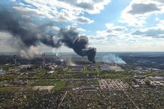
A plume from a chemical plant fire drifted over residential areas as it dissipated. Local residents were instructed to stay inside until the fire was extinguished. After the fire was extinguished, some residents submitted claims against the chemical company for alleged property damage.
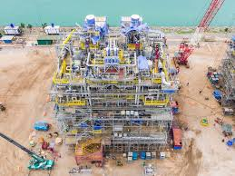
Floating Production Storage and Offloading (FPSO) vessels are essentially floating refineries. A FPSO is docked at an offshore platform and take the crude oil produced and refine it into finished products. The finished products are then offloaded to tanker vessels or barges where the finished products are shipped to their next destinations. These are very complex vessels requiring years to complete. In many cases, construction dispute arises with respect to contested change orders and schedule delays.
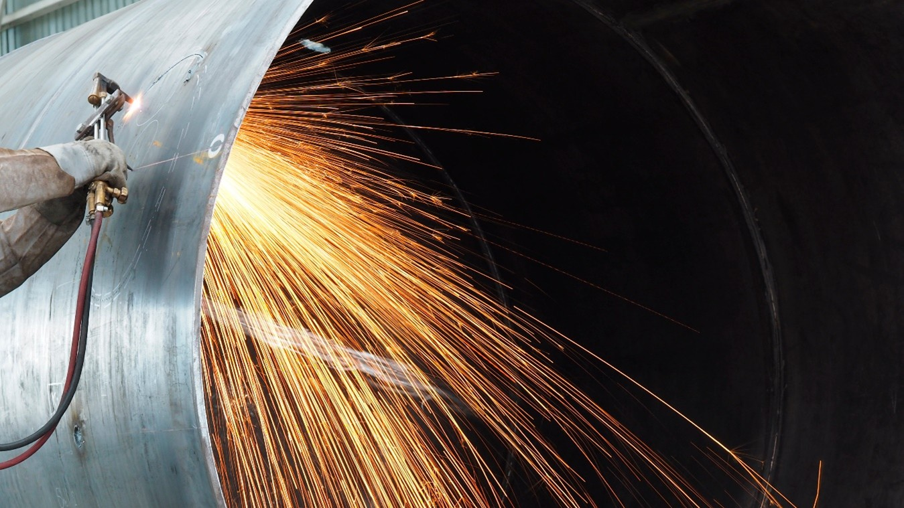
An Oil & Gas midstream company subcontracted plant modifications to accept a new crude oil product. The modifications included making tie-ins to existing piping for the installation of Tee fittings to direct the crude oil to its associated storage tank. A cold machine cut was made to minimize the risk of fire at the tie-ins. This was followed by welding new flange fittings to accept the new Tee fitting. A commercial grade plug was installed to limit vapors to the hot work area. During the welding of the flange fitting, a fire erupted that injured several workers as they jumped off their scaffolding to avoid the fire.
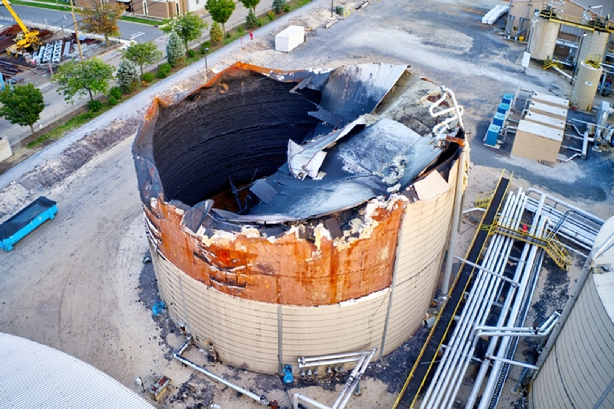
An Oil & Gas midstream company subcontracted the removal of both the floating roof seals to a specialist contractor. Since the storage tank still had product, the owner specified the use of non-sparking tools be used to replace the seal. During the work, vapors ignited and the resultant fire consumed the floating and exterior roofs and its contents.
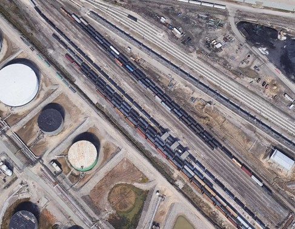
A newly constructed railcar unloading station was designed to unload several types of crude oil in a specific time frame. During start-up and commissioning, a new heavier crude oil was introduced and the resultant railcar unloading rate was reduced. This issue was not able to be resolved and the parties initiated litigation.
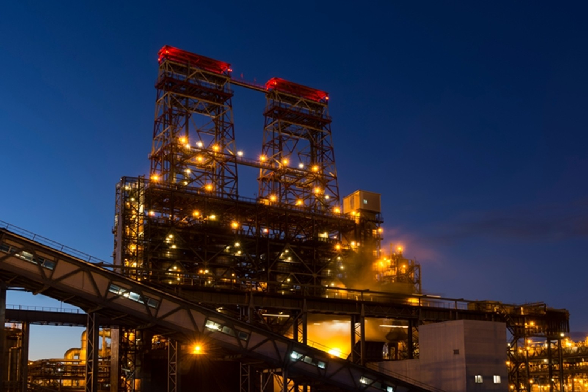
A refinery experienced a power outage at their coker unit due to an accidental trip of an electrical circuit breaker at the switchyard. The outage lasted approximately two hours. However, the start-up of the coker unit was delayed due to pluggage issues with valves and piping that had to be cleared before the coker could re-start. The company claimed a business interruption loss and equipment damage that could not be resolved. The claim went to litigation.
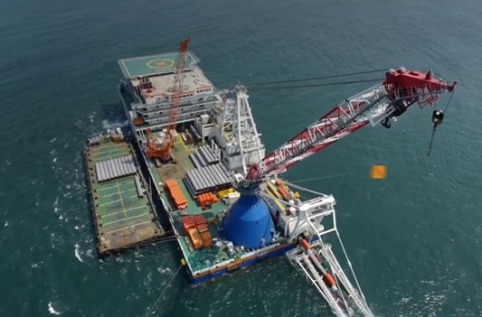
In the Gulf of Mexico, a tugboat lost power in a storm and dropped anchor in order to avoid striking an offshore production facility. The anchor damaged the sales pipeline from the production facility to shore. The oil and gas producing company claimed damages from not only the damaged pipeline but also the inability to sell natural gas for a period of six months while the pipeline repair was planned and executed.
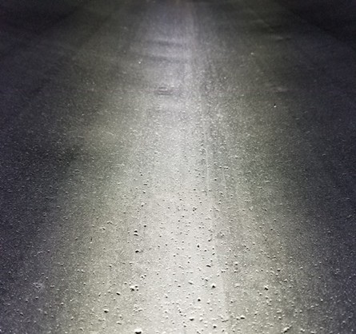
A stainless steel tanker truck was leased from a leasing company for the purpose of hauling a specific fluid used in the oil and gas industry. The fluid was reportedly compatible with the stainless steel. Following several trips to the rigs, the tanker truck was emptied and cleaned. When the cleaning crew entered the tanker truck, they discovered that the internal surface of the tanker was severely corroded. An insurance claim was submitted to cover the loss.
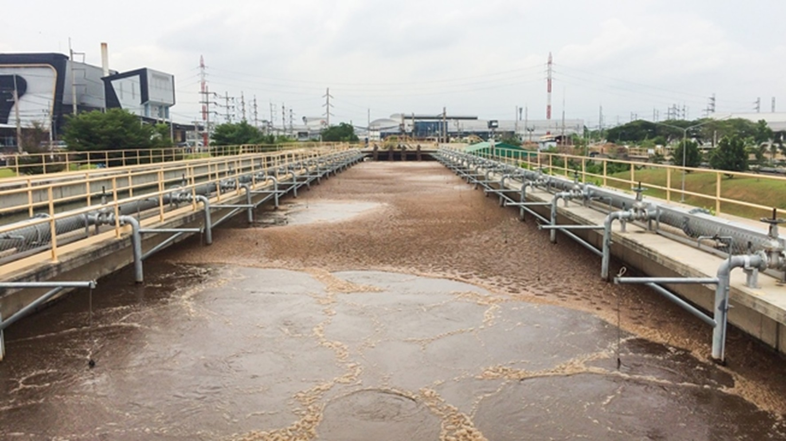
A newly constructed biological wastewater treatment plant was financed by way of energy savings from discontinuing the operation of the older and less efficient plant. The older plant was at the end of its life and a new plant was designed and constructed to replace it. After start-up and commissioning, it was observed that the contracted energy savings did not materialize. Subsequently, the owner sued the process engineering firm, the design-build contractor and their detail design firm for recovery of the excess energy used and construction costs to remedy.
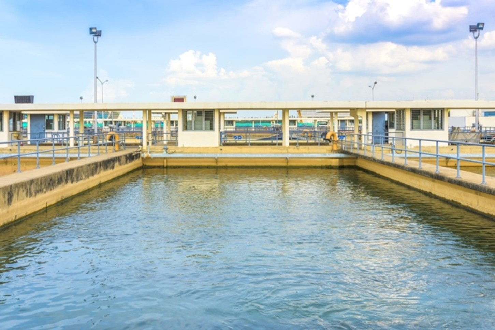
A newly constructed biological wastewater treatment plant was alleged unable to meet performance criteria and the owner initiated litigation with all parties involved. One issue was the instability of dissolved oxygen (DO) which is controlled to maintain the bacterial reaction, DO effluent limits, and minimize energy costs. The owner alleged that they could not maintain a stable DO value for the reactor basins which was threatening their maximum effluent limits for DO and particulate.
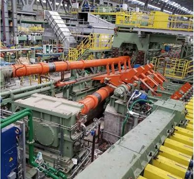
Construction disputes for a newly constructed tube mill resulted in the parties going to arbitration to settle their claims. The tube mill is a very complex construction project taking several years to complete. Construction claims included unresolved change orders, schedule delay claims and labor inefficiency claims due to labor stacking.
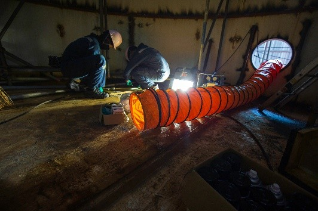
Workplace injuries are one of the leading types of lawsuits litigated in the US. When assessing responsible parties, litigants often turn to the OSHA regulations on workplace safe work practices to defend their position. This includes: Walking Working Surfaces (i.e., trips and falls), Lockout Tagout / Line Break / De-energization of Equipment, Hot Work, Confined Space, Fall Protection, and Personal Protection Equipment.
When the numbers matter, you need analysis you can trust and explain.